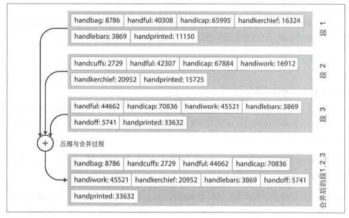
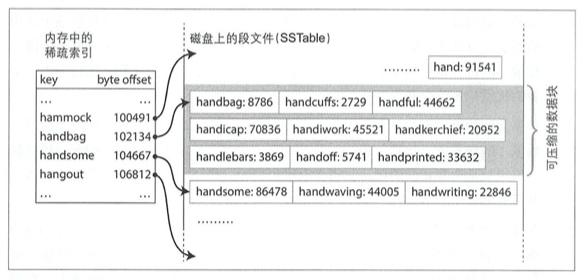
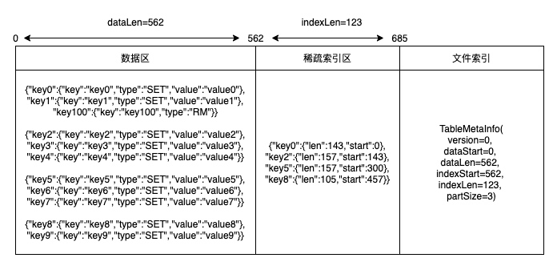

前言
LSM-Tree 是很多 NoSQL 数据库引擎的底层实现，例如 LevelDB，Hbase 等。本文基于《数据密集型应用系统设计》中对 LSM-Tree 数据库的设计思路，结合代码实现完整地阐述了一个迷你数据库，核心代码 500 行左右，通过理论结合实践来更好地理解数据库的原理。
SSTable（排序字符串表）
在上篇文章从零开始写KV数据库：基于哈希索引中，我们基于哈希索引实现了一个数据库，它的局限性是哈希表需要整个放入到内存，并且区间查询效率不高。
在哈希索引数据库的日志中，key 的存储顺序就是它的写入顺序，并且对于同一个 key 后出现的 key 优先于之前的 key，因此日志中的 key 顺序并不重要。这样的好处是写入很简单，但没有控制 key 重复带来的问题是浪费了存储空间，初始化加载的耗时会增加。
现在简单地改变一下日志的写入要求：要求写入的 key 有序，并且同一个 key 在一个日志中只能出现一次。这种日志就叫做 SSTable，相比哈希索引的日志有以下优点：
合并多个日志文件更加简单高效。因为日志是有序的，所以可以用文件归并排序算法，即并发读取多个输入文件，比较每个文件的第一个key，按照顺序拷贝到输出文件。如果有重复的 key，那就只保留最新的日志中的 key 的值，老的丢弃。
查询 key 时，不需要在内存中保存所有 key 的索引。如下图所示，假设需要查找 handiwork，且内存中没有记录该 key 的位置，但因为 SSTable 是有序的，所以我们可以知道 handiwork 如果存在一定是在 handbag 和 handsome 的中间，然后从 handbag 开始扫描日志一直到 handsome 结束。这样的好处是有三个：
- 内存中只需要记录稀疏索引，减少了内存索引的大小
- 查询操作不需要读取整个日志，减少了文件 IO
- 可以支持区间查询 
构建和维护 SSTable
我们知道写入时 key 会按照任意顺序出现，那么如何保证 SSTable 中的 key 是有序的呢？一个简单方便的方式就是先保存到内存的红黑树中，红黑树是有序的，然后再写入到日志文件里面。
存储引擎的基本工作流程如下：
- 当写入时，先将其添加到内存的红黑树中，这个内存中的树称为内存表。
- 当内存表大于某个阈值时，将其作为 SSTable 文件写入到磁盘，因为树是有序的，所以写磁盘的时候直接按顺序写入就行。
- 为了避免内存表未写入文件时数据库崩溃，可以在保存到内存表的同时将数据也写入到另一个日志中（WAL），这样即使数据库崩溃也能从 WAL 中恢复。这个日志写入就类似哈希索引的日志，不需要保证顺序，因为是用来恢复数据的。
- 处理读请求时，首先尝试在内存表中查找 key，然后从新到旧依次查询 SSTable 日志，直到找到数据或者为空。
- 后台进程周期性地执行日志合并与压缩过程，丢弃掉已经被覆盖或删除的值。
以上的算法就是 LSM-Tree（基于日志结构的合并树 Log-Structured Merge-Tree） 的实现，基于合并和压缩排序文件原理的存储引擎通常就被称为 LSM 存储引擎，这也是 Hbase、LevelDB 等数据库的底层原理。
实现一个基于 LSM 的数据库
前面我们已经知道了 LSM-Tree 的实现算法，在具体实现的时候还有很多设计的问题需要考虑，下面我挑一些关键设计进行分析。
内存表存储结构
内存表的 value 存储什么？直接存储原始数据吗？还是存储写命令（包括 set 和 rm ）？这是我们面临的第一个设计问题。这里我们先不做判断，先看下一个问题。
内存表达到一定大小之后就要写入到日志文件中持久化。这个过程如果直接禁写处理起来就很简单。但如果要保证内存表在写入文件的同时，还能正常处理读写请求呢？
一个解决思路是：在持久化内存表 A 的同时，可以将当前的内存表指针切换到新的内存表实例 B，此时我们要保证切换之后 A 是只读，只有 B 是可写的，否则我们无法保证内存表 A 持久化的过程是原子操作。
- get 请求：先查询 B，再查询 A，最后查 SSTable。
- set 请求：直接写入 A
- rm 请求：假设 rm 的 key1 只在 A 里面出现了，B 里面没有。这里如果内存表存储的是原始数据，那么 rm 请求是没法处理的，因为 A 是只读的，会导致 rm 失败。如果我们在内存表里面存储的是命令的话，这个问题就是可解的，在 B 里面写入 rm 命令，这样查询 key1 的时候在 B 里面就能查到 key1 已经被删除了。
因此，假设我们持久化内存表时做禁写，那么 value 是可以直接存储原始数据的，但是如果我们希望持久化内存表时不禁写，那么 value 值就必须要存储命令。我们肯定是要追求高性能不禁写的，所以 value 值需要保存的是命令， Hbase 也是这样设计的，背后的原因也是这个。
另外，当内存表已经超过阈值要持久化的时候，发现前一次持久化还没有做完，那么就需要等待前一次持久化完成才能进行本次持久化。换句话说，内存表持久化只能串行进行。
SSTable 的文件格式
为了实现高效的文件读取，我们需要好好设计一下文件格式。
以下是我设计的 SSTable 日志格式：

- 数据区：
- 数据区主要是存储写入的命令，同时为了方便分段读取，是按照一定的数量大小分段的。
- 稀疏索引区：
- 稀疏索引保存的是数据段每一段在文件中的位置索引，读取 SSTable 时候只会加载稀疏索引到内存，查询的时候根据稀疏索引加载对应数据段进行查询。
- 文件索引区：
- 存储数据区域的位置
以上的日志格式是迷你的实现，相比 Hbase 的日志格式是比较简单的，这样方便理解原理。同时我也使用了 JSON 格式写入文件，目的是方便阅读。而生产实现是效率优先的，为了节省存储会做压缩。
代码实现分析
我写的代码实现在：TinyKvStore，下面分析一下关键的代码。代码比较多，也比较细碎，如果只关心原理的话可以跳过这部分，如果想了解代码实现可以继续往下读。
SsTable
内存表持久化
内存表持久化到 SSTable 就是把内存表的数据按照前面我们提到的日志格式写入到文件。对于 SSTable 来说，写入的数据就是数据命令，包括 set 和 rm，只要我们能知道 key 的最新命令是什么，就能知道 key 在数据库中的状态。
/**
* 从内存表转化为ssTable
* @param index
*/
private void initFromIndex(TreeMap<String, Command> index) {
try {
JSONObject partData = new JSONObject(true);
tableMetaInfo.setDataStart(tableFile.getFilePointer());
for (Command command : index.values()) {
//处理set命令
if (command instanceof SetCommand) {
SetCommand set = (SetCommand) command;
partData.put(set.getKey(), set);
}
//处理RM命令
if (command instanceof RmCommand) {
RmCommand rm = (RmCommand) command;
partData.put(rm.getKey(), rm);
}
//达到分段数量，开始写入数据段
if (partData.size() >= tableMetaInfo.getPartSize()) {
writeDataPart(partData);
}
}
//遍历完之后如果有剩余的数据（尾部数据不一定达到分段条件）写入文件
if (partData.size() > 0) {
writeDataPart(partData);
}
long dataPartLen = tableFile.getFilePointer() - tableMetaInfo.getDataStart();
tableMetaInfo.setDataLen(dataPartLen);
//保存稀疏索引
byte[] indexBytes = JSONObject.toJSONString(sparseIndex).getBytes(StandardCharsets.UTF_8);
tableMetaInfo.setIndexStart(tableFile.getFilePointer());
tableFile.write(indexBytes);
tableMetaInfo.setIndexLen(indexBytes.length);
LoggerUtil.debug(LOGGER, "[SsTable][initFromIndex][sparseIndex]: {}", sparseIndex);
//保存文件索引
tableMetaInfo.writeToFile(tableFile);
LoggerUtil.info(LOGGER, "[SsTable][initFromIndex]: {},{}", filePath, tableMetaInfo);
} catch (Throwable t) {
throw new RuntimeException(t);
}
}
写入的格式是基于读取倒推的，主要是为了方便读取。例如 tableMetaInfo 写入是从前往后写的，那么读取的时候就要从后往前读。这也是为什么 version 要放到最后写入，因为读取的时候是第一个读取到的，方便对日志格式做升级。这些 trick 如果没有动手尝试，光看是很难理解为什么这么干的。
/**
* 把数据写入到文件中
* @param file
*/
public void writeToFile(RandomAccessFile file) {
try {
file.writeLong(partSize);
file.writeLong(dataStart);
file.writeLong(dataLen);
file.writeLong(indexStart);
file.writeLong(indexLen);
file.writeLong(version);
} catch (Throwable t) {
throw new RuntimeException(t);
}
}
/**
* 从文件中读取元信息，按照写入的顺序倒着读取出来
* @param file
* @return
*/
public static TableMetaInfo readFromFile(RandomAccessFile file) {
try {
TableMetaInfo tableMetaInfo = new TableMetaInfo();
long fileLen = file.length();
file.seek(fileLen - 8);
tableMetaInfo.setVersion(file.readLong());
file.seek(fileLen - 8 * 2);
tableMetaInfo.setIndexLen(file.readLong());
file.seek(fileLen - 8 * 3);
tableMetaInfo.setIndexStart(file.readLong());
file.seek(fileLen - 8 * 4);
tableMetaInfo.setDataLen(file.readLong());
file.seek(fileLen - 8 * 5);
tableMetaInfo.setDataStart(file.readLong());
file.seek(fileLen - 8 * 6);
tableMetaInfo.setPartSize(file.readLong());
return tableMetaInfo;
} catch (Throwable t) {
throw new RuntimeException(t);
}
}
从文件中加载 SSTable
从文件中加载 SSTable 时只需要加载稀疏索引，这样能节省内存。数据区等查询的时候按需读取就行。
/*
* 从文件中恢复ssTable到内存
*/
private void restoreFromFile() {
try {
//先读取索引
TableMetaInfo tableMetaInfo = TableMetaInfo.readFromFile(tableFile);
LoggerUtil.debug(LOGGER, "[SsTable][restoreFromFile][tableMetaInfo]: {}", tableMetaInfo);
//读取稀疏索引
byte[] indexBytes = new byte[(int) tableMetaInfo.getIndexLen()];
tableFile.seek(tableMetaInfo.getIndexStart());
tableFile.read(indexBytes);
String indexStr = new String(indexBytes, StandardCharsets.UTF_8);
LoggerUtil.debug(LOGGER, "[SsTable][restoreFromFile][indexStr]: {}", indexStr);
sparseIndex = JSONObject.parseObject(indexStr,
new TypeReference<TreeMap<String, Position>>() {
});
this.tableMetaInfo = tableMetaInfo;
LoggerUtil.debug(LOGGER, "[SsTable][restoreFromFile][sparseIndex]: {}", sparseIndex);
} catch (Throwable t) {
throw new RuntimeException(t);
}
}
SSTable 查询
从 SSTable 查询数据首先是要从稀疏索引中找到 key 所在的区间，找到区间之后根据索引记录的位置读取区间的数据，然后进行查询，如果有数据就返回，没有就返回 null。
/**
* 从ssTable中查询数据
* @param key
* @return
*/
public Command query(String key) {
try {
LinkedList<Position> sparseKeyPositionList = new LinkedList<>();
Position lastSmallPosition = null;
Position firstBigPosition = null;
//从稀疏索引中找到最后一个小于key的位置，以及第一个大于key的位置
for (String k : sparseIndex.keySet()) {
if (k.compareTo(key) <= 0) {
lastSmallPosition = sparseIndex.get(k);
} else {
firstBigPosition = sparseIndex.get(k);
break;
}
}
if (lastSmallPosition != null) {
sparseKeyPositionList.add(lastSmallPosition);
}
if (firstBigPosition != null) {
sparseKeyPositionList.add(firstBigPosition);
}
if (sparseKeyPositionList.size() == 0) {
return null;
}
LoggerUtil.debug(LOGGER, "[SsTable][restoreFromFile][sparseKeyPositionList]: {}", sparseKeyPositionList);
Position firstKeyPosition = sparseKeyPositionList.getFirst();
Position lastKeyPosition = sparseKeyPositionList.getLast();
long start = 0;
long len = 0;
start = firstKeyPosition.getStart();
if (firstKeyPosition.equals(lastKeyPosition)) {
len = firstKeyPosition.getLen();
} else {
len = lastKeyPosition.getStart() + lastKeyPosition.getLen() - start;
}
//key如果存在必定位于区间内，所以只需要读取区间内的数据，减少io
byte[] dataPart = new byte[(int) len];
tableFile.seek(start);
tableFile.read(dataPart);
int pStart = 0;
//读取分区数据
for (Position position : sparseKeyPositionList) {
JSONObject dataPartJson = JSONObject.parseObject(new String(dataPart, pStart, (int) position.getLen()));
LoggerUtil.debug(LOGGER, "[SsTable][restoreFromFile][dataPartJson]: {}", dataPartJson);
if (dataPartJson.containsKey(key)) {
JSONObject value = dataPartJson.getJSONObject(key);
return ConvertUtil.jsonToCommand(value);
}
pStart += (int) position.getLen();
}
return null;
} catch (Throwable t) {
throw new RuntimeException(t);
}
}
LsmKvStore
初始化加载
- dataDir：数据目录存储了日志数据，所以启动的时候需要从目录中读取之前的持久化数据
- storeThreshold：持久化阈值，当内存表超过一定大小之后要进行持久化。
- partSize：SSTable 的数据分区阈值
- indexLock：内存表的读写锁
- ssTables： SSTable 的有序列表，按照从新到旧排序。
- wal：顺序写入日志，用于保存内存表的数据，用作数据恢复
启动的过程很简单，就是加载数据配置，初始化内容，如果需要做数据恢复就将数据恢复到内存表。
/**
* 初始化
* @param dataDir 数据目录
* @param storeThreshold 持久化阈值
* @param partSize 数据分区大小
*/
public LsmKvStore(String dataDir, int storeThreshold, int partSize) {
try {
this.dataDir = dataDir;
this.storeThreshold = storeThreshold;
this.partSize = partSize;
this.indexLock = new ReentrantReadWriteLock();
File dir = new File(dataDir);
File[] files = dir.listFiles();
ssTables = new LinkedList<>();
index = new TreeMap<>();
//目录为空无需加载ssTable
if (files == null || files.length == 0) {
walFile = new File(dataDir + WAL);
wal = new RandomAccessFile(walFile, RW_MODE);
return;
}
//从大到小加载ssTable
TreeMap<Long, SsTable> ssTableTreeMap = new TreeMap<>(Comparator.reverseOrder());
for (File file : files) {
String fileName = file.getName();
//从暂存的WAL中恢复数据，一般是持久化ssTable过程中异常才会留下walTmp
if (file.isFile() && fileName.equals(WAL_TMP)) {
restoreFromWal(new RandomAccessFile(file, RW_MODE));
}
//加载ssTable
if (file.isFile() && fileName.endsWith(TABLE)) {
int dotIndex = fileName.indexOf(".");
Long time = Long.parseLong(fileName.substring(0, dotIndex));
ssTableTreeMap.put(time, SsTable.createFromFile(file.getAbsolutePath()));
} else if (file.isFile() && fileName.equals(WAL)) {
//加载WAL
walFile = file;
wal = new RandomAccessFile(file, RW_MODE);
restoreFromWal(wal);
}
}
ssTables.addAll(ssTableTreeMap.values());
} catch (Throwable t) {
throw new RuntimeException(t);
}
}
写入操作
写入操作先加写锁，然后把数据保存到内存表以及 WAL 中，另外还要做判断：如果超过阈值进行持久化。这里为了简单起见我直接串行执行了，没有使用线程池执行，但不影响整体逻辑。set 和 rm 的代码是类似，这里就不重复了。
@Override
public void set(String key, String value) {
try {
SetCommand command = new SetCommand(key, value);
byte[] commandBytes = JSONObject.toJSONBytes(command);
indexLock.writeLock().lock();
//先保存数据到WAL中
wal.writeInt(commandBytes.length);
wal.write(commandBytes);
index.put(key, command);
//内存表大小超过阈值进行持久化
if (index.size() > storeThreshold) {
switchIndex();
storeToSsTable();
}
} catch (Throwable t) {
throw new RuntimeException(t);
} finally {
indexLock.writeLock().unlock();
}
}
内存表持久化过程
- 切换内存表及其关联的 WAL：先对内存表加锁，然后新建一个内存表和 WAL，把老的内存表和 WAL 暂存起来，释放锁。这样新的内存表就可以开始写入，老的内存表变成只读。
- 执行持久化过程：把老内存表有序写入到一个新的ssTable中，然后删除暂存内存表和临时保存的 WAL。
/**
* 切换内存表，新建一个内存表，老的暂存起来
*/
private void switchIndex() {
try {
indexLock.writeLock().lock();
//切换内存表
immutableIndex = index;
index = new TreeMap<>();
wal.close();
//切换内存表后也要切换WAL
File tmpWal = new File(dataDir + WAL_TMP);
if (tmpWal.exists()) {
if (!tmpWal.delete()) {
throw new RuntimeException("删除文件失败: walTmp");
}
}
if (!walFile.renameTo(tmpWal)) {
throw new RuntimeException("重命名文件失败: walTmp");
}
walFile = new File(dataDir + WAL);
wal = new RandomAccessFile(walFile, RW_MODE);
} catch (Throwable t) {
throw new RuntimeException(t);
} finally {
indexLock.writeLock().unlock();
}
}
/**
* 保存数据到ssTable
*/
private void storeToSsTable() {
try {
//ssTable按照时间命名，这样可以保证名称递增
SsTable ssTable = SsTable.createFromIndex(dataDir + System.currentTimeMillis() + TABLE, partSize, immutableIndex);
ssTables.addFirst(ssTable);
//持久化完成删除暂存的内存表和WAL_TMP
immutableIndex = null;
File tmpWal = new File(dataDir + WAL_TMP);
if (tmpWal.exists()) {
if (!tmpWal.delete()) {
throw new RuntimeException("删除文件失败: walTmp");
}
}
} catch (Throwable t) {
throw new RuntimeException(t);
}
}
查询操作
查询的操作就跟算法中描述的一样：
- 先从内存表中取，如果取不到并且存在不可变内存表就从不可变内存表中取
- 内存表中查询不到就从新到旧的 SSTable 中依次查询
@Override
public String get(String key) {
try {
indexLock.readLock().lock();
//先从索引中取
Command command = index.get(key);
//再尝试从不可变索引中取，此时可能处于持久化sstable的过程中
if (command == null && immutableIndex != null) {
command = immutableIndex.get(key);
}
if (command == null) {
//索引中没有尝试从ssTable中获取，从新的ssTable找到老的
for (SsTable ssTable : ssTables) {
command = ssTable.query(key);
if (command != null) {
break;
}
}
}
if (command instanceof SetCommand) {
return ((SetCommand) command).getValue();
}
if (command instanceof RmCommand) {
return null;
}
//找不到说明不存在
return null;
} catch (Throwable t) {
throw new RuntimeException(t);
} finally {
indexLock.readLock().unlock();
}
}
总结
知行合一，方得真知。如果我们不动手实现一个数据库，就很难理解为什么这么设计。例如日志格式为什么这样设计，为什么数据库保存的是数据操作而不是数据本身等等。
本文实现的数据库功能比较简单，有很多地方可以优化，例如数据持久化异步化，日志文件压缩，查询使用布隆过滤器先过滤一下。有兴趣的读者可以继续深入研究。
参考资料
- 《数据密集型应用系统设计》